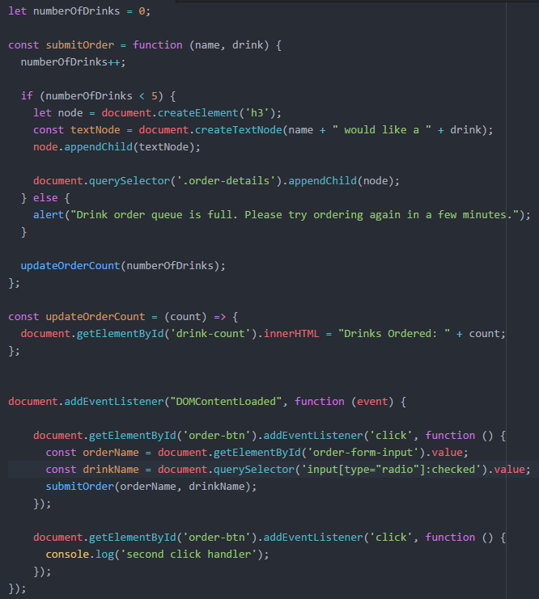

Expand this section to compare your work.
You can also compare your my-script.js file with our answer key if the image is too difficult to read.
You can also compare your my-script.js file with our answer key if the image is too difficult to read.